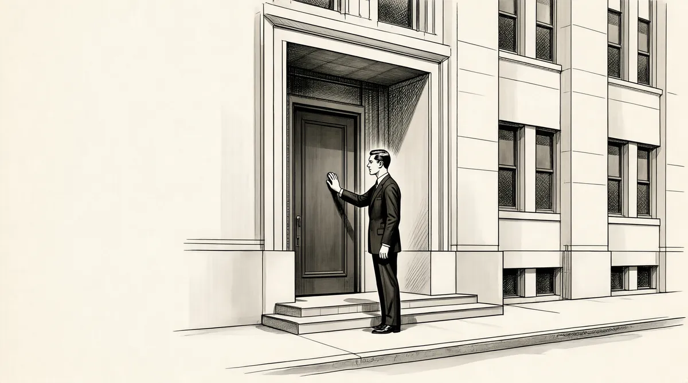

第14章 大象

沃伦·巴菲特以350名学生中的第16名从高中毕业，在他的毕业年鉴中，他描述了“未来的证券经纪人”这一角色。1得闲后，他和唐·丹利做的第一件事就是买了一辆二手灵车。沃伦将灵车停到房前，用来和女孩外出约会。2霍华德回家后，问：“是谁把这车停在这里的？”利拉说有一个邻居病得非常严重，还没有准备好灵车。这就是那辆灵车最后的结局。
当他和丹利卖掉灵车后，沃伦找了一份为《时代先驱报》送报纸的活儿。他早上4点钟起床，开一辆从戴维·布朗（一个来自弗雷德里克斯堡的年轻人，他喜欢多丽丝，后来参加了美国海军）那里借来的小型福特汽车。3沃伦踩着汽车的油门，车门敞开，以15英里的时速行驶，一手握着方向盘，一手拿着报纸，并把它们扔到订户的草坪上。他对此的解释是，在这么早的时间，这种驾车方式不太可能发生太可怕的事情。4
在4点45分，沃伦完成工作后，会到特德快餐店买双份的辣薯饼作为早餐犒赏自己。早餐后，他会做他的第二份工作——去乔治敦大学医院分发报纸。
我不得不给牧师和修女们半打免费报纸，这总是让我有点儿恼火。我不认为他们会对世俗的事感兴趣，但这是工作的一部分，我只能每个房间、每个病房送。
当产房里的孕妇生下孩子后，她们一看见我就会叫：“噢，沃伦，我将告诉你一些比1美分小费更有价值的东西。我将告诉你我的孩子是什么时候出生的，他有多重。早上8点31分，6磅11盎司。”婴儿的出生时间和体重也可以用来当作博彩游戏，这是华盛顿的一种数字游戏。5
只要沃伦得到的是这些无用的信息而不是小费，他就会气得牙痒痒。作为一个概率预测者，他不参与这种博彩游戏，因为赔率太糟糕了。“博彩游戏的规则是1赔600，你的投注对象抽取其中的10%。这意味着你基本上是在对概率为1000∶1的事情以540∶1的比率投注。人们总是用分或角来投注。如果你在这游戏中投入1美分，你就可能赢得5.4美元。城里所有人都玩儿这个游戏，我的一些报纸订户经常问我：“你玩儿这个游戏吗？”我从来不玩儿，我想我父亲不会同意我玩儿。
虽然沃伦已经有足够的能力去拉斯韦加斯做一个赔率制定者，但是他没有将这事进行下去。1947年，霍华德·巴菲德和其他330名国会议员击败了总统杜鲁门的否决，通过了《塔夫脱–哈特莱法案》。作为美国曾颁布过的最具争议性的立法之一，《塔夫脱–哈特莱法案》严格规定了工会的行为。该法案规定，如果工会通过一场罢工来声援另一场罢工，此行为非法；而且总统有权宣布国家进入紧急状态，强制罢工工人复工。该法案被认为是“奴隶劳工法”。6虽然奥马哈是一座工会城市，但是，霍华德绝不会按照选民的偏好投票，他总是为自己的原则投票。
因此，当巴菲特一家在夏天回到奥马哈，沃伦和父亲去看家乡的棒球比赛时，他看到那些蓝领工人选民对父亲极其不满。
当在比赛间隙介绍到场的名人时，父亲起身，所有在场的人都嘘声一片。而父亲就站在那里，一言不发。他能够坦然面对这一切，但是，你们不能想象这对一个孩子所产生的影响。
即使是温和的对抗都让沃伦感到害怕，然而他不久就能独立面对这一切了。虽然快17岁了，但沃伦仍然只是个孩子，如果他早出生几年，可能会参军上战场。
沃伦没有参军，而是在秋天的时候开始上大学。巴菲特一家一直都认为沃伦会进入宾夕法尼亚大学的沃顿商学院。7沃顿商学院是全美范围内供本科生就读的最有地位的商学院。本杰明·富兰克林创建了宾夕法尼亚大学，也留下了很多名言，如“借钱味难尝，使人心悲伤”、“时间就是金钱”、“省一分钱即挣一分钱”等等。实际上，宾夕法尼亚大学和沃伦非常合拍，当其他孩子玩耍的时候，精力过人的沃伦总是四处忙碌挣钱。
但是在沃伦看来，他并没有把这事看得太过重要。“我知道我想要干什么。我已经挣了足够的钱生活，大学只会拖我的后腿。”但是他从来不会拒绝他父亲认为重要的事，因此，他勉强同意了进入学院学习。
考虑到儿子尚不够成熟，父母安排在奥马哈的朋友的儿子查克·彼得森当他的室友。彼得森比沃伦大5岁，刚刚在军队服役了18个月。彼得森相貌英俊，是个纨绔子弟，每晚和不同的女孩约会、喝酒。彼得森一家天真地认为沃伦也许能让他定定性，而沃伦的父母则觉得年长的查克也许有助于沃伦适应大学生活。
1947年秋，巴菲特全家送沃伦去费城。他们把沃伦和他的浣熊毛皮大衣都放进一个小小的宿舍套间。查克已经搬了进去，不过，当时他不在宿舍，而是在外面约会。
巴菲特一家驾车回到华盛顿，将沃伦留在了校园，这个地方到处都是查克这样的年轻人。“二战”的老兵成群结队地走过学校的绿地，宾夕法尼亚大学校园的中心生活区全是这帮老兵。他们多年形成的世故和老道扩大了沃伦与同学之间的差异——在搬到华盛顿时，沃伦也曾有这种感受。校园生活忙碌又很社会化，在这样的校园里，在一群性格坚毅、穿着运动外套和锃亮皮鞋的人中，穿着松垮T恤和破旧网球鞋的沃伦很显眼。宾夕法尼亚大学的橄榄球运动非常盛行，秋季的校园社交生活都是兄弟会组织的橄榄球比赛。沃伦虽然也喜欢运动，但是在这里运动的社交需求超过了他对运动的需求。他习惯了把大量时间用来琢磨事情、计算资金、整理他的收藏，以及在自己房间里演奏音乐。在宾夕法尼亚大学，这一年的1600名学生四处交友调情、玩儿摇滚乐、喝酒、玩儿橄榄球，而沃伦的独居寡处则显得格格不入。8他就像蜂巢里的一只蝴蝶。
对于飞入蜂群的蝴蝶，蜜蜂出现强烈反应是预料中的事。查克保持着士兵式的整洁，当他第一次见到他的新室友时，沃伦的邋遢令他感到震惊。他很快发现，沃伦完全不知道怎么独立生活。
在他们合住后的第一个晚上，查克因参加社交活动照例回来很晚。第二天早上，他醒来发现整个浴室一团糟，而他的室友显然已经急匆匆地去上早课了。晚上看到沃伦时，查克说：“洗漱完以后请把浴室打扫干净，好吗？”“好的。”沃伦说。查克接着数落：“我早上进来的时候发现你把剃刀丢在水槽里，把肥皂沫弄得到处都是，毛巾扔在地上，简直比地狱还糟糕。我喜欢干净。”沃伦只好不停地道歉。
第二天早上查克起床的时候，沃伦的毛巾还是在浴室的地上，水槽里都是细小的胡须，此外居然还有一把湿漉漉的电动剃须刀。晚上，查克看见沃伦时对他说：“沃伦，你自己看看。用完剃刀要拔掉插头，否则别人可能会因此而触电。我不想每天早上帮你收拾，你的不拘小节会把我逼疯的。”“好的，好的，没问题。”沃伦答道。
可是，一切还是维持原样。剃刀还是放在水槽里。查克意识到，他说的话沃伦根本就没有听进去。他很生气，决定采取行动。他把剃刀的插头拔了，然后扔进已经放满水的水槽里。
第二天，沃伦买了一个新的剃刀，插上插头，浴室照旧一片凌乱。
查克没辙了，他想他是跟一个处在青春期的叛逆的孩子住在一起。沃伦当时沉迷于阿尔·乔森的音乐，每天没日没夜地练习他的曲子，9唱着“妈咪，我愿意为了你的一个微笑而跋涉千里”。10
查克需要学习，可是沃伦的音乐让他无法安静。沃伦有充足的时间唱歌，因为他只买了少量的课本，而且在开学前就已经读完了，就跟别人看《生活》杂志一样。之后，沃伦把书本扔到一边，再也不翻。这让他能够把整晚的时间都用来唱“妈咪”——只要他喜欢的话。查克觉得自己快要疯了，而沃伦知道自己很幼稚，但就是没有办法控制自己。
我那时候可能无法很好地适应一切，而且我和整个环境不同步。除了我的年纪也比其他人都小以外，在很多方面，我的表现比自己的年龄还幼稚。我真的无法适应社会。
查克的业余生活自然丰富多彩，他宣誓加入了AlphaTauOmega兄弟会。沃伦对希腊人的生活不感兴趣，但是，他宣誓参加了父亲的AlphaSigmaPhi兄弟会。这个组织并不是特别令人讨厌，但是，其宣誓仪式却让沃伦闹了个大红脸。这个兄弟会的格言是具备热情、谦虚和勇气。沃伦有足够的热情和谦逊，但缺乏勇气却是他的致命弱点。11宣誓仪式是去沃纳梅克百货商店买特大号的女士内裤和内衣，沃伦在内衣柜台前徘徊了很久很久，然后才看见窃笑的售货员小姐。12
1947年秋天，利拉和多丽丝在华盛顿一个叫“CoffeewithCongress”的电台节目中谈到沃伦那时理着平头、有点儿天真的外表。
主持人：沃伦长得英俊吗？
利拉：他小时候长得不错。他就是孩子气——我们不说他英俊，但他也不难看。
主持人：那他很帅。
利拉：不，不帅，只是对人友好。
主持人：那让我们从一个女孩的角度来看，他是不是很可爱？
多丽丝（外交辞令）：我觉得他给人一种粗犷而率直的感觉。13
尽管沃伦的鼓声和歌声很烦人，查克还是慢慢开始喜欢沃伦，把他当成自己的弟弟看。但查克始终不能理解，他的这个室友整个冬天一直穿着一双破旧的凯德软底帆布鞋。即使要打扮，也可能一只脚穿黑色的皮鞋，另一只脚穿棕色的，而沃伦本人却毫无察觉。
就像和沃伦在一起的很多人一样，查克感到自己必须好好照顾他。他们一周在学生食堂一起吃几次饭，沃伦每次都点同样的东西：一块牛排、一份土豆配菜和一罐百事可乐。后来沃伦又发现了一种浇着炼乳的巧克力圣代，每天都吃。有一天吃完午饭，查克把沃伦带到新安装的乒乓球台前，查克很吃惊，沃伦来华盛顿4年了，居然从来没有打过乒乓球。在最开始的几盘，沃伦只能勉强接住查克的球，查克显然赢得很轻松。
后来的一两天里，沃伦简直打乒乓球打疯了。他每天早上第一件事就是跑到学生活动中心，找一个走过的人，然后在乒乓球台上将他“屠杀”。他每天下午要打三四个小时的球，查克简直不能相信沃伦的变化，但至少乒乓能让沃伦在查克学习的时候离开房间，不再制造噪声。14
然而乒乓球还不能完全满足宾夕法尼亚的体育锻炼要求，在斯库尔基尔河上赛艇和双桨式划水是宾夕法尼亚最流行的运动。学校有许多类似的俱乐部，沃伦参加了一个150磅重量级别的新生划船俱乐部，并加入了其中一支8个人的队伍。沃伦喜欢划船，就像喜欢举重、篮球、高尔夫球、乒乓球和他自己的波洛球游戏一样，因为这些运动是重复性的，有规律、有节奏。但划船是集体运动，沃伦喜欢投篮是因为他可以自己一个人练习。他从来没有成功地参加过集体运动，甚至是和别人搭档跳舞。在他从事的工作和业务领域，他都能成为一个成功的领导者，但他没有办法和别人一起搭档工作。
“这太痛苦了。做一个船员，你不能就只是跟着或者滥竽充数。你必须和其他人同步把浆放在水里。你会累得难以置信，但是你必须跟上速度，而且必须要很和谐一致。这真是一项令人难以忍受的运动。”沃伦每天下午回到寝室，都是浑身湿透，手上起泡流血，然后以最快的速度入睡。
他开始寻找另一种团队活动。他希望查克和他一起卖二手高尔夫球，但查克忙于学习和社交活动，拒绝了他。沃伦还建议查克和他一起搞弹子球生意，他不需要查克出钱出力，但查克根本搞不清自己能做什么。其实沃伦只是需要有个人听他谈他的生意。如果查克成为他的伙伴，那查克也将成为沃伦世界的一员。
他总是很擅长这种“汤姆·索亚历险”，但是有一次，他输给了查克。他仍然希望查克不仅是他的朋友，还是他的生意伙伴。沃伦曾邀请查克到华盛顿来，查克吃掉了利拉招待他的所有东西，甚至是燕麦片，利拉对此很是吃惊。“沃伦会什么都不吃，”她说，“他不吃这个，不吃那个，总是让我弄一些很特别的东西给他吃。”查克觉得很有趣，沃伦的妈妈居然被儿子搞得服服帖帖。
对查克来说，沃伦虽是不懂事的孩子，却是一个神童。上课时，沃伦总能记住教授说的话，根本不需要看课本。15他记性好到能记住页码，倒背段落，还在老师引用课文的时候纠正老师的错误。16他曾对一个老师说过：“你忘了逗号。”17
在会计课上，老师还没有把200个学生的考卷发完，沃伦就已经站起来交卷了。查克就坐在教室的另一边，感到分外挫败。沃顿是一个竞争激烈、学业负担很重的地方，但沃伦不需要付出很多就可以学得很好。他把大量的时间都花在了打鼓和唱歌上。
查克非常喜欢沃伦，但最后还是受不了了。
他搬出去了。有天早上，我醒来，查克离开了。18
在那个暑假，沃伦虽然不情愿，但还是回到了华盛顿，回到了家。利拉在外帮助军队做招募工作，所以巴菲特家的孩子们享受了一个难得的自由的暑期。伯蒂是一个露营顾问，而多丽丝则在Garfinkel商店找了份工作。让多丽丝吃惊的是，在申请工作的时候，商店职员问了她的宗教信仰。还有，他们规定黑人只能在一楼买东西，而一楼不卖衣服。19
华盛顿是当时美国种族隔离最严重的城市。黑人不能做有轨电车的司机，不能做任何高尚的职业，他们不能加入基督教青年会，不能在大多数餐馆吃饭，不能住酒店，也不能买歌剧院的票。全世界没有其他地方像华盛顿一样让深色人种感到紧张。一个外国游人说过：“我宁愿做一个印度贱民，也不愿意在华盛顿做一个黑人。”20当时被一些右翼人士认为是“商业共产主义报纸”的《华盛顿邮报》已经开展了一段时间的种族主义运动。21虽然杜鲁门总统已经在军队中废止了种族歧视，同时推动公民权利改革，但进展很缓慢。
沃伦并不阅读风格自由的《华盛顿邮报》，几乎不关注华盛顿的种族问题。他还不成熟，尚完全沉浸在自己的小生意里。他又回去为《时代先驱报》送报纸，继续开着借来的福特小车。他又和丹利在一起，打算买一辆消防车，但最后还是花350美元买了一辆1928年的劳斯莱斯小轿车。它是灰色的，比一辆林肯轿车还要重。引擎一开始有点儿问题，沃伦和丹利维修了一下，然后终于开出华盛顿50英里后返回。车冒着烟，漏着油，开在路上歪歪斜斜。但当他们被警察拦下的时候，沃伦不停地说啊说，总算没有被罚。22
他们把车停在巴菲特家的车库里，但很快弄得家里都是烟，只好把车拖出来，停到街上。他们用了整整一个星期来维修车子。多丽丝说：“基本上都是丹利在干活儿，沃伦只是负责在旁边看着，并不断鼓励他。”
当他们开始给车子刷漆时，丹利和他的女朋友诺尔玛·瑟斯顿买了一种带海绵的工具，把车刷成了深蓝色，看上去真的很棒。23消息自然而然地传开，于是他们把车出租，35美元一天。
沃伦又有了一个主意，他想让大家注意到他的车。丹利穿得像一个司机，而沃伦穿上他的浣熊毛皮大衣，发动汽车，带着头发染成鲜艳颜色的诺尔玛·瑟斯顿一起去市区。丹利假装在修引擎，沃伦拿着一根手杖给予指导，而诺尔玛·瑟斯顿则像个电影明星一样站在一旁。“这些都是沃伦的主意，”诺尔玛·瑟斯顿说，“他是比较有表演天赋的，我们想看看有多少人会在街上看我们。”
诺尔玛·瑟斯顿知道沃伦从来没有和女孩真正约会过，在和女孩子交往方面需要帮助。于是，她把她的表亲鲍比·沃利介绍给沃伦。他们在那个夏天纯情地约会，一起看电影、玩儿桥牌，沃伦接二连三地给她出各种动脑筋的谜题。24
秋天来了，沃伦离开鲍比回到宾夕法尼亚大学，他已经18岁，是大二学生。他现在有了两个新的室友，一个是兄弟会的克莱德·赖格哈德，另一个是分配到他们宿舍的新生乔治·奥斯曼。刚进学校时，沃伦让克莱德在一次商业计划中当挂名负责人，虽然那次的生意最终没什么进展，但是经过短暂的合作，两人成了朋友。
相比当新生的第一年，沃伦并没有改变太多，但他和克莱德的共同点显然要多于和查克的共同点。当时，克莱德觉得沃伦的网球鞋、T恤和脏兮兮的卡其布裤子很好笑，而当沃伦嘲笑克莱德的考试分数时，克莱德也不往心里去。“虽然他没有让我变得更聪明，但他确实让我更有效地利用已经掌握的东西。”克莱德说。事实上，沃伦是一个有效利用自己的资源的行家，尤其是利用自己的时间。他每天早早起床，在寝室吃完鸡肉沙拉，然后去学校上课。25在第一学年的混沌之后，他终于找到了一门他喜欢的课——霍肯贝瑞教授的“101个行业”。这门课讨论了不同的行业，以及运营一家公司的具体细节。“纺织、钢铁、石油……我到现在还记得那本书，我从中学到很多东西。我能想起书中提到的石油开采的法律，钢铁的贝塞麦炼钢法。我对那本书非常着迷，对我来说，真的是很有意思。”不过，与沃伦住同一栋宿舍楼的哈里·贝沙是一位苦读生，和沃伦一起上霍肯贝瑞的课，学得很吃力，他很不喜欢沃伦轻松前进的学习风格。26
卡塔尔多教授所讲授的商务法也让沃伦很受用。“教授有非常强的记忆力，他会引用很详细的案例。我仍记得哈德利起诉巴克森格尔，以及肯伯起诉法伦的案例。所以，我在考试的时候会尽量引用他讲授的知识来回答问题，不管是不是适用。教授则全盘接收。”
在优秀的记忆能力的帮助下，沃伦很轻松地学习，能充分享受其他时间。午饭时间，他会去AlphaSigma大厦。这是一栋三层楼的建筑，有旋转楼梯，工作人员是黑人克尔森。他穿着白色的外衣烹饪、打扫，让这个地方具有一种庄重之感。餐室的拐角处全天都有人玩儿桥牌游戏，沃伦会坐下来，玩儿上几把。27沃伦一直保持着对恶作剧的爱好，有时，他会让兄弟会的莱尼·法里纳在大街上摆个引人注目的姿势照相，而他自己假装在扒莱尼的口袋，或者是擦皮鞋。28
沃伦曾让年纪比自己大的科林光着身子、戴着面罩潜到水里去，和这种鬼主意一样，在这段时间里，沃伦和克莱德一起告诉他们的另一个室友乔治，说他看上去“精神不振，太瘦弱，如果不锻炼肌肉，就无法吸引女孩子”。他们最后策动乔治给自己买了几个杠铃。“然后，当哈里·贝沙在楼下学习的时候，我们常常‘砰砰’上下举动杠铃。我们把这些杠铃‘砰’地放在地板上，以此作弄贝沙，觉得特别有趣。”29
不过，在大学里，沃伦开始放弃让自己变得很强壮的想法。“一段时间之后，我觉得自己的骨头有问题。我的锁骨不够长，锁骨决定了你的肩膀宽度，而你无法改变你的锁骨。这就是我为什么觉得厌烦并最终放弃的原因。我想明白了，我无论如何都无法拥有女孩子所青睐的肌肉。”
自从进入宾夕法尼亚大学，沃伦还没有过任何约会。周六是兄弟会举行大型聚会的日子，有橄榄球比赛的赛前午餐会、赛后鸡尾酒会、晚餐和夜晚舞会。沃伦写信给鲍比，让她来过周末，并说他实际已经爱上了她。鲍比喜欢他，也被他的信打动，但却没有回应他的感情。30
沃伦和安·贝克有过一次约会，她在布林茅尔学院读书。当沃伦搬到华盛顿后不久，他曾在安爸爸的面包店打过工。那时沃伦读八年级，而安还是一个有着长长金发的小女孩。安·贝克曾经被评为高中最害羞的女孩。他们约会的那天就像是一场害羞比赛：他们一起在费城漫步，彼此都异常缄默。31“我们可能是全美最害羞的人。”沃伦回忆说。沃伦不知道要怎么挑起话头，一紧张，他就小声嘟囔。32
有时候，沃伦和克莱德开着借来的福特小轿车去郊区找关于木乃伊、吸血鬼和科学怪人之类的恐怖电影。33那个时候很少有人有车，所以，他在兄弟会的兄弟们对此印象颇深。34这颇为讽刺：沃伦是唯一一个有车可以和女孩子有亲密关系的人，但却找不到女孩子。他不参加常青藤联盟大学的舞会和兄弟会之间的联谊舞会。而且他也总是会跳过AlphaSigmaPhi兄弟会周日的下午茶舞会，也从不参加兄弟会聚会。35当有人讨论关于性的问题时，他会紧张得脸红，并盯着自己的鞋子看。36在这样一所谈情说爱风行的学校，沃伦完全不在状态。
我试着喝酒是因为我参加了兄弟会，我交的会费的一半都用来为这些聚会买酒精饮品。我觉得我快喝醉了，但是，我就是不喜欢这个味道。我不喜欢啤酒。即使不喝酒的时候，我也会有愚蠢的举动。我的意思是，我就坐在那里，和其他人一块儿——他们不让我喝酒，我也会犯傻。
不过，即使没有女伴，也不喝酒，沃伦有时候也会出现在周六的联谊晚会上。他能够吸引一小群人坐在角落里，听他发表股评。沃伦了解股票市场，也知道怎么讲得动人。在投资和商业领域方面，沃伦在AlphaSigmaPhi兄弟会的同伴们都会听从他的建议，他们很崇拜沃伦在政治方面渊博的知识，认定沃伦具有某种“政治家的内在”，送了他一副球拍，上面写着给他起的绰号“参议员”。37
沃伦以新生身份加入了青年共和党，因为他爱上了其中的一个女孩。但是，沃伦没成为那个女孩的男朋友，反倒在二年级的时候成了这个组织的主席。沃伦的上任时间是一个令人激动的时刻——总统选举年的秋季。1948年，共和党支持托马斯·杜威，让他和弱势的现任总统哈里·杜鲁门竞选。
巴菲特一家越来越痛恨杜鲁门。虽然霍华德提出了所谓的“杜鲁门主义”——目的是为了抑制共产主义的扩张，但是，和很多保守主义者一样，霍华德认为，杜鲁门和他的国务卿乔治·马歇尔正在假装和苏联的斯大林套近乎。38此外，杜鲁门执行了马歇尔计划，在“二战”后运送了1800万吨食物到欧洲。霍华德则是74名投反对票的议员之一，他非常肯定马歇尔计划会是另一个版本的“老鼠洞计划”，也确信民主党正在破坏经济，于是，他开始买金项链给他的女儿们，以防美元变得一文不值的时候，她们无法养活自己。
那年霍华德正在为他的第四次竞选忙碌，他在投票通过《塔夫脱–哈特莱法案》之后被嘘，当时沃伦也在现场，不过，和家庭的其他成员一样，沃伦认为霍华德的议员位置还是比较稳的。尽管如此，霍华德第一次将竞选托付给了竞选活动负责人手里——巴菲特家的朋友威廉·汤普森博士。在奥马哈，汤普森非常有名并很受尊重，他了解这个城市的命脉，此外他还是一位心理学家。日子一天天过去，选举不断向前推进，奥马哈的人们都赶来祝贺霍华德。“恭喜，你又当选了。”看上去选举似乎已经结束了。
另一边，杜威似乎也是稳操胜券。投票显示杜鲁门被远远地甩在了后面，不过，杜鲁门毫不理会这些情况，一直在外面巡回演讲，每到一处，只作短暂停留，在火车车厢里发表演说，宣传他的“公平施政”政策：全民医疗保险，广泛的公民权利立法，废除《塔夫脱–哈特莱法案》。杜鲁门在奥马哈作了停留，参加了一个游行，为一个公园举行了落成仪式。他看上去很高兴的样子，似乎根本没读到报纸对他的失败的预测。39
随着选举日的临近，沃伦很高兴地预期着父亲和杜威的胜利，并和费城动物园计划好，要在11月3日那天，骑着一头大象沿着伍德兰大街而行。沃伦想象着这将是一种凯旋的游行，就像迦太基名将汉尼拔进入撒丁尼亚岛一样。
但是，在选举日的第二天早上，沃伦不得不取消了准备好的表演。杜鲁门赢得了1948年的总统竞选。霍华德输了，选民们把霍华德·巴菲特赶出了国会。“我之前从来没有骑过大象。当杜鲁门击败杜威，大象也没戏了。我父亲在他的4次竞选中，第一次遭遇失败。这真是糟糕的一天。”
两个月以后，霍华德任期结束，巴菲特一家要离开华盛顿前几天，沃伦的叔公弗兰克去世了。当沃伦还小的时候，在哈里斯·厄汉公司，弗兰克对着所有股票大喊：“价格会跌到零。”宣读他的遗嘱时，家里人发现他只投资了政府债券。40弗兰克叔公比他的“淘金女”太太活的时间长，按照他的遗嘱，所投资的政府债券被放到一个受限信托公司，并要求到期后，进行政府债券的再投资。仿佛是要说服他的侄子和信托人霍华德，弗兰克为家庭成员们都订阅了《巴克斯特书信》，告诉他们政府债券是唯一安全的投资。弗兰克希望来世获得平静，而他是当时唯一一位巴菲特家族中对身后事有交代的人。
但是毫无疑问，霍华德害怕通货膨胀，并认为政府债券最后会变成废纸。他的担心战胜了他对遗嘱的顾忌，他设法修改了弗兰克的遗嘱，并在法律上获准了一些技术上的调整，这样一部分钱最后可以用于股票投资。41
这一切的发生适逢利拉所说的“多年来最寒冷的冬天”。暴风雪侵袭了中西部地区，有好几周，人们不得不在天寒地冻的天气里，从内布拉斯加周边的州县空运干草给被冰雪封锁的牲畜，不让它们在自己眼皮底下死去。42这个严冬的干草堆成为了杜鲁门胜利的标志。从来没富裕过的霍华德现在有两个孩子在读大学，另一个则快要进大学了。他重新回到以前的公司，现在叫巴菲特–福克公司。但在霍华德离开期间，他的合作伙伴卡尔·福克已经完全控制了公司客户，现在也没有兴趣和霍华德一起分享。霍华德在奥马哈市区漫无目的地走着，雪花扫过他的脸，他想寻找新的客户。但是，由于他长期不在奥马哈，大多数人都只能通过他写的文章了解他，而诸如《人类自由取决于可兑换黄金的货币》之类的文章则让他获得了极端主义者的称号。43在1949年春天，霍华德去乡间，为了寻找新主顾，敲开每家农户的大门。44
对沃伦来说，父亲的失败让他感到很难过，但也让他找到理由离开东海岸。他觉得学校很枯燥，非常痛恨费城，还因此给费城取了一个绰号叫“肮脏的德尔菲”（Filthy-delphia）。45
春季的学期一旦结束，沃伦回来后就可以永远待在家里了。他的心情如此轻松，连信上都签的是“前沃顿的巴菲特”。他的理由是，内布拉斯加大学林肯分校的学费比宾夕法尼亚大学便宜，他要在内布拉斯加大学读完最后的课程。46他把轮胎破旧的福特小车还给了戴维·布朗，由于轮胎实行配额供应，47因此如何更换轮胎就是布朗的事了。沃伦只想要一个宾夕法尼亚大学的纪念品。离开的时候，沃伦和克莱德用掷硬币的方式来决定谁将拥有西蒙写的《桥牌失利原因解析》。结果沃伦赢了。
[1]费城英文名为Philadelphia，与沃伦新起的绰号发音相近。——编者注